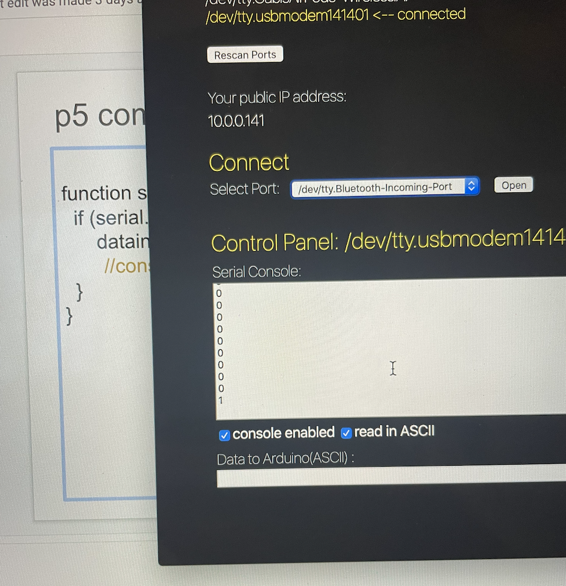

Final Project!
Here is all the documentation for my final project.
Hello, here is my final project on RFID to LED strip.
Here is an image of schematic.
Here is a photo of my circuit.
Here is more photos of my project.

Here is my ardiono code.
#include <SPI.h> #include <MFRC522.h> #define SS_PIN 10 #define RST_PIN 9 int ledPin = 6; boolean LED_status = false; MFRC522 rfid(SS_PIN, RST_PIN); MFRC522::MIFARE_Key key; // Init array that will store UID byte uid[4]; void printHex(byte *buffer, byte bufferSize) { for (byte i = 0; i < bufferSize; i++) { Serial.print(buffer[i] < 0x10 ? " 0" : " "); Serial.print(buffer[i], HEX); } } void setup() { analogWrite(ledPin, LOW); Serial.begin(9600); SPI.begin(); // Init SPI bus rfid.PCD_Init(); // Init MFRC522 for (byte i = 0; i < 6; i++) { key.keyByte[i] = 0xFF; } } void loop() { if (rfid.PICC_IsNewCardPresent() && rfid.PICC_ReadCardSerial() && LED_status == false){ for (byte i = 0; i < 4; i++) { uid[i] = rfid.uid.uidByte[i]; } printHex(rfid.uid.uidByte, rfid.uid.size); rfid.PICC_HaltA(); rfid.PCD_StopCrypto1(); if(uid[0] == 0x3C) { Serial.println("blue tag"); Serial.println("turn led on"); analogWrite(ledPin, 255); LED_status = true; delay(1000); } else if(uid[0] == 0xF3) { Serial.println("white tag"); Serial.println("blink"); analogWrite(ledPin, 50); LED_status = true; delay(1000); } } else if(rfid.PICC_IsNewCardPresent() && rfid.PICC_ReadCardSerial() && LED_status == true) { Serial.println("turn led off"); analogWrite(ledPin, 0); LED_status = false; delay(1000); } }
Here is my p5 code.
Here is a video of my working circuit.